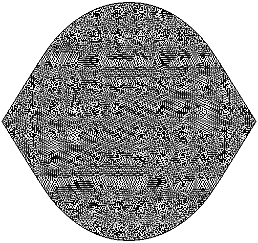
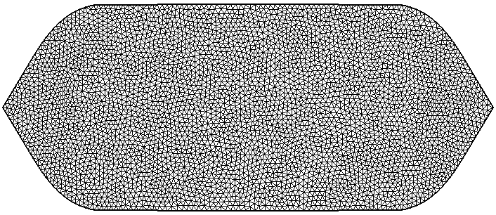
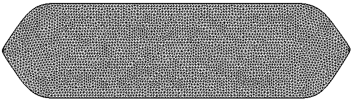
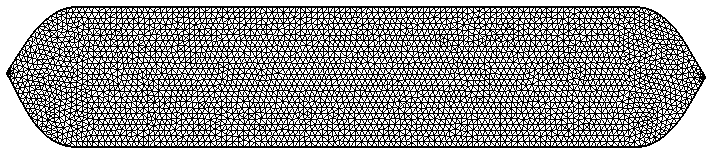
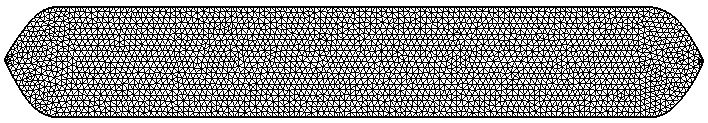
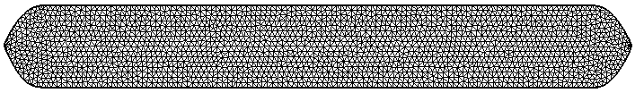
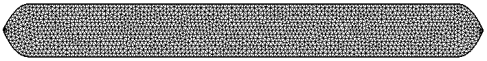
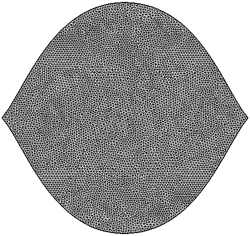
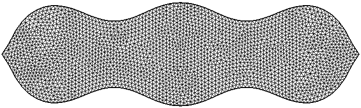

Optimization of Steklov eigenvalues
Collaboration with A. Al Sayed, A. Henrot, F. Nacry. Preprint available here.
We look at optimal shapes for the Steklov eigenvalue problem under convexity and diameter constraint. The convexity helps us obtain theoretical results regarding existence.
The numerical simulations use the support function parametrization in the convex case. The simulations suggest that the diameter constraint is saturated at exactly two points. This implies that the simpler double graph parametrization should also work. This second parametrization allows us to find numerical candidates even without a convexity constraint. All computations were done with FreeFEM and the optimization was handled by IPOPT. You can consult the paper for more detailed information.
The minimizers in the class of convex sets with fixed diameter are shown below for the first seven eigenvalues. The minimizers seem to converge to a segment.
| maximizer | |
| $\sigma_1$ |  |
| $\sigma_2$ |  |
| $\sigma_3$ |  |
| $\sigma_4$ |  |
| $\sigma_5$ |  |
| $\sigma_6$ |  |
| $\sigma_7$ |  |
Some results obtained in the non-convex case are shown below.
| maximizer | |
| $\sigma_1$ |  |
| $\sigma_2$ |  |
| $\sigma_3$ |  |
← Back to numerical computations
Created: Mar 2020